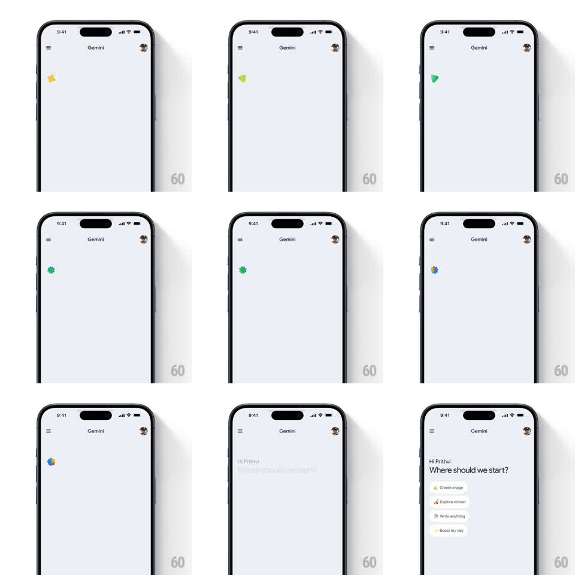

Media
Frame-by-frame

Rebuild this animation 1:1: Gemini's home loader - a small spark cycles through Google-color shapes (star, triangle, burst, pinwheel), morphing and rotating, then settles and the home content fades in.

Rebuild this animation 1:1: Gemini's home loader - a small spark cycles through Google-color shapes (star, triangle, burst, pinwheel), morphing and rotating, then settles and the home content fades in. ## Integration Integration: stack-agnostic spec - springs given as stiffness/damping, timed motions as duration + curve; map every value to your framework and animation library of choice. ## Scene Gemini home, pale grey: top bar with hamburger, "Gemini" title, user avatar; the loading area below is empty except the morphing spark; final content: "Hi Prithvi" / "Where should we start?" and suggestion chips (Create image, Explore cricket, Write anything, Boost my day). ## Motion spec Pattern: shape-cycling multicolor spark loader resolving into content. - The spark morphs through a sequence (~250ms per shape, springy scale pulse at each change): red four-point star -> yellow wedge -> green triangle -> teal asterisk/burst -> a four-color pinwheel (red, yellow, green, blue blades). - Each morph rotates the shape 90 degrees and overshoots scale slightly (1 -> 1.15 -> 1); colors crossfade through the morph, never hard-cut. - The pinwheel phase spins continuously (360 degrees per 900ms) - the "working" state. - On ready: the pinwheel contracts to a point (scale -> 0, rotate accelerating, 250ms) and the greeting block fades up in its place (translateY 10 -> 0, 300ms); chips stagger in below (60ms apart, fade + rise 8px). ## Calibration - The loader is small (~24px) and off to the upper-left area - a thinking indicator, not a splash. - Morphs are playful but precise - clean geometric shapes, no blob physics. ## Reduced motion Spark fades between shapes (200ms each); content fades in (250ms). ## Don't miss - Each shape is a flat solid color - the Google quartet only appears together in the final pinwheel. - The spin accelerates into the exit contraction - the loader "winds down" into the content.